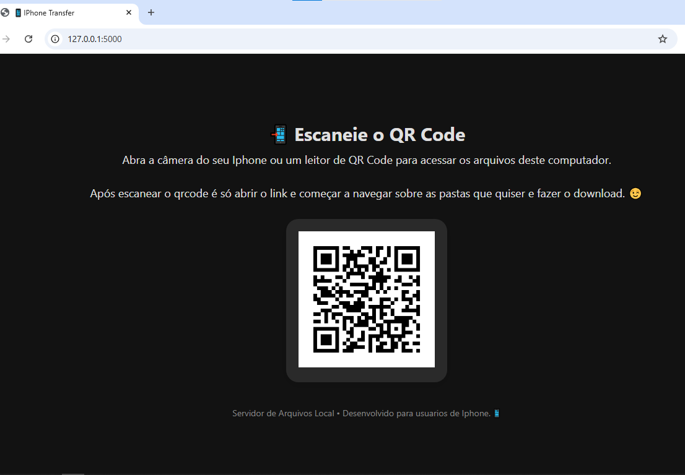

📥 Baixar iPhone Transfer (.zip)
📱 Como Usar:
- 1. Baixe e extraia o arquivo ZIP
- 2. Execute o arquivo .exe
- 3. Um navegador abrirá automaticamente com um QR Code
- 4. Escaneie o QR Code com seu iPhone
- 5. Acesse os arquivos do PC diretamente no celular
Dica: use o navegador Google Chrome no iPhone para melhor compatibilidade.